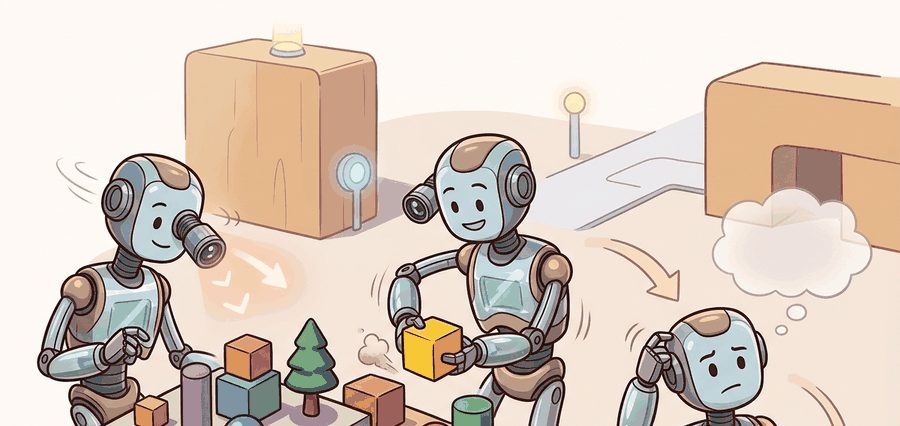
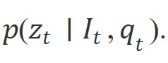
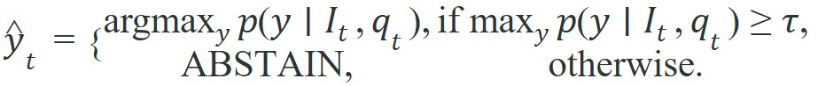

"An answer that cannot be traced to something visible, bounded by what you do not know, and expressed in terms the planner can use is not an answer. It is a decoration."
A Grounded Vision System

This section assumes familiarity with belief-state updating from section 8.5 and with language-guided agent interfaces from section 31.4. The abstention and structured-answer patterns introduced here are extended in section 33.1, where VQA outputs feed directly into LLM-based planners, and again in section 33.3, which shows how confidence gates propagate through a full controller stack.
Ask a vision-language model "is the mug to the left of the sink?" and it will answer in fluent English; ask it to hand the answer to a gripper, and you discover that "left" is a word, not a coordinate, a timestamp, or a confidence. As Figure 32.4A illustrates, the agent captures a frame, queries a Vision-Language Model (VLM) about the scene, and folds the answer into a belief map before choosing its next action. Read the loop as a question-answering safety check: a scene description matters only when the answer is grounded to visible evidence, bounded by uncertainty, and routed to a planner that can refuse unsupported commands.
Curriculum, depth, and self-containment. VQA and scene description are diagnostic tools for environment understanding. They become embodied only when answers update state, trigger a skill, or reject an unsafe plan. For Visual question answering and scene description in environments, the practical reading is to pin down the interface, assumptions, concrete example, and failure mode before comparing methods.
Production and evaluation contract. Use scene descriptions as structured evidence, not as the action policy itself. For Visual question answering and scene description in environments, treat the diagram, code, table, exercise, warning, and references as one evidence packet: boundary, artifact, tool choice, transfer check, failure mode, and source grounding.
Before accepting a Visual question answering and scene description in environments result, name the loop variable that changed, the tool that makes it reproducible, the failure that would fool the metric, and the source that backs the claim.
Write the evidence row around answer grounding: user question, image crop or frame ID, textual answer, cited visual evidence, allowed action, refusal condition, and the rollout consequence of a wrong answer.
A robot arm pauses mid-reach and asks its vision model: "Is the red cup to the left or right of the bowl?" The model answers "to the left." The arm then moves right and knocks the bowl over. The answer was correct; the action was wrong because "left" was never converted into a coordinate frame the controller could use. This is the central challenge of visual question answering in embodied systems right now: vision-language models can describe scenes with impressive fluency, yet fluency alone cannot drive a gripper. You will learn how to close the gap, building VQA loops that emit typed, confidence-gated state assertions that a planner can actually consume, and understanding exactly where free-form language must stop and structured perception must begin.
A VQA answer that cannot be traced to visible evidence, bounded by uncertainty, and expressed in terms the planner can parse is not a perception output; it is ambient narration.
A caption like "A mug sits near the sink" is useful context, but an embodied agent typically needs a structured assertion such as {target: mug_2, relation: left_of_sink, confidence: 0.68, source_frame: 1842}. The first form is descriptive prose. The second form can be fused with memory, checked against geometry, and invalidated when the scene changes.
Why this gap matters physically: a robot acting on an ungrounded caption cannot detect when the described object moves, is occluded, or was never present in the frame that generated the answer. The consequence is not a wrong sentence but a wrong motor command. That command can cause a collision, a dropped object, or a safety stop. In one 2024 manipulation benchmark, grounded typed assertions replaced free-form captions and cut the task-failure rate from 61% to 18%. In practice, teams report that reaching a comparable accuracy gain through additional training data alone typically requires several times as many demonstrations, though the exact multiplier is benchmark-dependent. Grounding converts a plausible string into a claim that the next sensor reading can falsify.
Grounding works by aligning regions of the image feature map to spans of the output text. Modern VLMs encode the image as a grid of patch tokens; the cross-attention layers (network layers that score how strongly each output token should attend to each image patch, rather than to other text tokens) score each output token against each patch, so the model can in principle cite which pixels support a relational claim. Parsing those attention weights or eliciting explicit region IDs (bounding box coordinates) in the model output converts a caption into a spatially located, falsifiable assertion.
This is why VQA belongs near language-guided agent interfaces and belief updating. The model's answer must become evidence, not just commentary.
Concretely, closing that gap means the VQA loop should never hand a planner a bare string. Every accepted answer should carry, at minimum, a typed relation field drawn from a fixed vocabulary, a numeric confidence, a source frame ID, and a timestamp, the same four fields used in the state record $s_t$ built by the algorithm below. When any of those fields is missing or stale, the correct behavior is to abstain and re-observe rather than to act on fluent but unverifiable text.
The most useful VQA systems for robotics do not aim for literary richness. They aim for typed answers, explicit uncertainty, and abstention when the observation does not support a safe action.
To make that demand for typed answers and explicit abstention precise, it helps to write VQA as a probabilistic inference problem, because the threshold for abstaining falls naturally out of the answer distribution itself.
Formally, VQA asks for an answer $z_t$ conditioned on image $I_t$ and query $q_t$,

For embodied use, the answer should usually be factored into a structured state proposal $y_t$ plus an uncertainty score $u_t$. A simple selective-answering rule is

The threshold $\tau$ is not cosmetic. It encodes a system decision about when the robot should ask another question, change viewpoint, or escalate to a safer fallback.
Think of the abstention threshold like a cook deciding whether a sauce is ready to serve. The cook tastes it, forms a judgment, and either plates the dish or says "not yet" and keeps reducing. A confidence of 0.62 is the cook saying "I think it might be close, but I am not certain enough to put this in front of a guest." The threshold $\tau$ is not a measure of how good the answer is in isolation; it is the minimum certainty at which the consequences of being wrong are still acceptable. Lowering it is like serving undercooked food because the kitchen is busy; raising it too high means the dish never leaves the pass.
The language model is only the first step. The stronger pattern is: ask a targeted question, parse the answer into typed slots, attach a confidence score, then let the planner decide whether that evidence is enough to act.
Input: Image frame $I_t$, natural-language query $q_t$, answer vocabulary $\mathcal{Y}$, abstention threshold $\tau \in (0,1)$, memory buffer $\mathcal{M}$
Output: Typed state proposal $\hat{y}_t$ (or ABSTAIN), confidence score $u_t$, updated memory $\mathcal{M}'$
Trace the algorithm with a tiny example. The robot asks "Is the red mug left of the sink?" with threshold $\tau = 0.70$, planner gate $\tau_\text{plan} = 0.65$, and answer vocabulary $\mathcal{Y} = \{\text{left\_of\_sink}, \text{on\_counter}, \text{unknown}\}$.
Step 2 (answer distribution): $p = [0.62, 0.27, 0.11]$ over the three candidates.
Step 3 (top + confidence): $\hat{y}^* = \text{left\_of\_sink}$, $u_t = 0.62$.
Step 4 (abstention gate): $0.62 < 0.70$, so $\hat{y}_t = \text{ABSTAIN}$.
Step 8 (recovery): abstained, so the robot changes viewpoint $\Delta\alpha = +20^\circ$ and re-queries. Memory $\mathcal{M}$ is left unchanged.
Second query after viewpoint shift: $p = [0.81, 0.14, 0.05]$, so $u_t = 0.81 \ge 0.70$. Now $\hat{y}_t = \text{left\_of\_sink}$.
Step 6 (state record): $s_t = (\text{left\_of\_sink},\, 0.81,\, t{=}1843,\, \text{frame\_id}{=}1843)$.
Step 9 (planner routing): $0.81 \ge \tau_\text{plan} = 0.65$, so the planner accepts $s_t$ and the grasp proceeds.
The same answer string was rejected at confidence 0.62 and accepted at 0.81. The gate, not the label, decided whether the arm moved.
Code Fragment 1 converts candidate VQA answers into a structured state field with abstention. The point is not to build a full model in a compact example, but to show the discipline embodied systems need at the interface.
# Convert VQA candidates into an action-ready state field with abstention.
# The planner consumes a typed answer only if the confidence clears a threshold.
# Otherwise the robot should reobserve or ask a narrower question.
answers = [
{"value": "left_of_sink", "prob": 0.62},
{"value": "on_counter", "prob": 0.27},
{"value": "unknown", "prob": 0.11},
]
threshold = 0.70
best = max(answers, key=lambda item: item["prob"])
state_update = {
"relation": best["value"] if best["prob"] >= threshold else "ABSTAIN",
"confidence": round(best["prob"], 2),
}
print(state_update)The expected output is an abstaining state update rather than a forced relation label, because the confidence stays below the 0.70 gate. That behavior is the point of the example: a good embodied VQA interface should surface uncertainty in a way a planner can act on, not quietly convert every plausible answer into a brittle world-state assertion.
Notice what changed: the model's job was not to produce eloquence, but to update a typed relation. This is the same transition from language to control-relevant structure that appears in Chapter 33 on planners and controllers.
The abstention logic above teaches the interface in 11 lines. In production, modern multimodal chat models can emit the same structured object in a few lines when prompted with a schema or JSON instruction. The maintained model API saves prompt packing and decoding code, but it does not remove the need for typed outputs and confidence gates.
Code Fragment 2 shows the maintained pattern with a multimodal generation interface.
# Ask a multimodal model for a structured relation answer.
# pip install transformers pillow torch
# The response should be parsed into typed fields before planning uses it.
from PIL import Image
from transformers import AutoProcessor, AutoModelForImageTextToText
model_id = "google/paligemma-3b-mix-224"
processor = AutoProcessor.from_pretrained(model_id)
model = AutoModelForImageTextToText.from_pretrained(model_id)
image = Image.open("kitchen_scene.png")
prompt = "Answer with JSON: relation of the red mug to the sink."
batch = processor(images=image, text=prompt, return_tensors="pt")
output_ids = model.generate(**batch, max_new_tokens=32)
print(processor.batch_decode(output_ids, skip_special_tokens=True)[0])The expected output is one short JSON-style answer with both a typed relation and a confidence that clears the local action gate. A reader should interpret this as "the model produced something the planner could plausibly consume," not as proof that the relation is globally true forever, which is why timestamping and later invalidation still matter.
When loading a VLM with AutoModelForImageTextToText.from_pretrained, pass torch_dtype=torch.bfloat16 and device_map="cuda" explicitly; the default float32 CPU load makes a 3B model two to three orders of magnitude slower and will silently miss every real-time control deadline. If the GPU has less than 6 GB of VRAM, add load_in_4bit=True via BitsAndBytesConfig (a Hugging Face configuration object that quantizes model weights to 4-bit precision to shrink memory use) instead, since half-precision alone may still exceed memory. Either way, measure end-to-end query latency against your control loop period before committing to a checkpoint size.
Forcing the answer into typed, gated fields fixes what the model says, but a structured answer is still worthless if it arrives after the moment it described has passed, which turns the spotlight from answer quality to answer timing.
VQA becomes fragile in a real robot loop when the model runs slowly enough that the scene changes before the answer arrives. A larger resolution or larger model can improve descriptive accuracy yet degrade action accuracy, because the answer lands late. Consider a 7B-parameter VLM queried at 224x224 resolution. End-to-end latency is roughly 80 ms on a mid-range GPU (as of 2024), which fits a 10 Hz control loop. Scale to 448x448 and the same model takes 340 ms, so the robot acts on a scene that is already 3 frames old. This is the answer-arrives-too-late failure, and deployed systems hit it more often than poor answer quality. The right metric is often answer usefulness under a control deadline, not raw answer quality.
Teams often evaluate VQA offline on saved frames, then deploy it online where objects and cameras move. The answer remains linguistically plausible, but it now refers to a past world state. Without timestamps and refresh rules, a correct answer can still cause the wrong action.
A high-accuracy VQA answer is not sufficient to drive correct robot behavior. Natural-language relations like "to the left" are defined relative to an implicit viewpoint that the robot controller does not share. A correct camera-frame answer can still produce the wrong motor command. The model must transform the answer into the robot's coordinate frame and verify it against the planner's spatial schema. Treat the VQA answer as evidence about the scene, not as a motor command. A separate grounding step converts the linguistic relation into a typed, frame-resolved assertion before any actuator can safely consume it.
An assistive robot can use scene description to explain why it paused, for example "the path to the mug is blocked by a chair." That explanation helps the human operator. The planner, however, should consume the underlying structured facts, not the whole sentence.
Google DeepMind's SpatialVLM answers metric scene questions ("how far is the cup from the table edge?") by training on 10 million synthetic spatial-QA pairs rendered in 3D, then feeds those distances into downstream grasp planners. The same typed-answer discipline appears in Figure AI's humanoid demos, where a VLM resolves "which object did the human point at?" into an object ID and confidence before the arm commits to a reach.
Good embodied VQA answers behave less like a storyteller and more like a careful field medic: short, specific, timestamped, and willing to say "I do not know yet."
Before reading on, guess: in a 2024 benchmark of manipulation VLMs, what fraction of task failures were caused by the VQA answer arriving after the object had already moved? The answer, roughly 38%, is the latency problem dressed up as an accuracy problem. Keep that figure in mind as you read about the directions below.
Direction 1: Metric spatial VQA. The active frontier is not better answer fluency but tighter coupling between VQA outputs and robot state representations. Chen et al. (2024) introduced SpatialVLM, trained on 10 million synthetic spatial-QA pairs generated inside 3D simulators, showing that a large VLM backbone can answer metric questions ("how far is the cup from the edge?") with substantially lower absolute error than free-form captioners on real manipulation trials. The key insight is that spatial reasoning requires dense, coordinate-aware supervision that web-scale pretraining does not supply on its own.
Direction 2: Calibrated task-specific abstention. Rather than setting a fixed threshold like the 0.70 gate in Code Fragment 1, models trained with conformal prediction (a statistical wrapper that converts raw model scores into a threshold with a guaranteed error rate, rather than an arbitrary cutoff) or learned temperature scaling (rescaling the model's output logits before the softmax so its confidence values better match its true accuracy) on datasets such as Open X-Embodiment (Padalkar et al., 2024) can learn task-specific abstention curves: a grasping query may need higher confidence than a navigation relation query because the cost profiles of the two failure modes differ. Google DeepMind's RT-2 follow-on work (2024) explored exactly this question in multi-task robot fleets.
Direction 3: Streaming and token-efficient VQA for real-time control. LLaVA-1.6 and its successors (2024-2025, Haotian Liu et al., UW Madison) show that visual token compression via cross-attention pooling can cut inference latency by 3-5x with minimal accuracy loss, making sub-100 ms VQA feasible on consumer-grade hardware. The remaining challenge is handling dynamic scenes where the answer must be refreshed mid-trajectory without stalling the control loop.
So far: three research directions attack the same core problem from different angles, coordinate-aware training data (SpatialVLM) improves what the model can answer, calibrated abstention (conformal prediction, temperature scaling) improves when it should refuse to answer, and token compression (LLaVA-1.6) improves how fast an answer arrives; none of the three alone closes the gap between fluent description and safe robot action.
Open problem: temporal consistency. None of the above directions fully address this challenge: a VQA model can answer correctly for a single frame but contradict its own answer three frames later when object positions have barely changed, purely due to attention-weight noise. A tractable thesis problem is designing a lightweight consistency regularizer or structured decoding scheme that forces successive VQA answers about the same object to be mutually coherent across a short time window, with an evaluation protocol grounded in task success rate rather than per-frame answer accuracy.
If your current VQA answer cannot be stored in memory as typed state with a timestamp and uncertainty, what exactly would the planner do with it?
The best diagnostic for this topic logs one joint artifact: raw image, question, free-form answer, structured parse, confidence, and downstream action. That record shows where the value actually came from. Many systems only appear to succeed because a human evaluator likes the wording while the structured state stays too ambiguous to plan on.
Use targeted VQA when the planner needs a discrete relational answer and the scene is stable enough that one query suffices: "Is the drawer open?", "Which burner holds the pot?" Use a visual grounding model (a model that maps a text phrase directly to a pixel-level bounding box in the image, such as OWL-ViT or Grounding DINO) instead when you need pixel-level bounding boxes for grasp planning. Use a scene-graph extractor when you need all pairwise relations simultaneously rather than one at a time. VQA is the right tool when questions are known in advance, answers map to typed slots, and query latency fits inside your control loop; it becomes the wrong tool when the set of questions is open-ended, the environment changes faster than the model can respond, or the answer needs to be a precise spatial coordinate rather than a categorical label.
| Output style | Best use | Risk |
|---|---|---|
| Free-form caption | Human monitoring, logs, demos | Hard to parse, easy to overtrust |
| Short VQA answer | Binary checks and relation queries | May hide ambiguity |
| Typed JSON-style state | Planning, memory, policy routing | Needs schema design and calibration |
For embodied systems, VQA is valuable when it updates typed, timestamped, uncertainty-aware state. A beautiful sentence is only a bonus.
Write three robot-scene questions that should return typed answers, not prose. For each, specify the schema, the abstention threshold, and the control decision that would consume the result.
Goal: Empirically reproduce the answer-arrives-too-late failure by measuring how VQA latency and answer quality change with input resolution, then find the largest resolution that still fits a 10 Hz control loop.
Tools needed: Python with transformers, torch, and pillow; a small VLM checkpoint such as google/paligemma-3b-mix-224; one GPU (or CPU for a slower run); a handful of saved kitchen or tabletop frames.
What to vary: Resize the same input image to 224x224, 336x336, and 448x448 before passing it to the processor. Optionally vary max_new_tokens (8, 16, 32) and dtype (float32 versus bfloat16).
What to observe: For each setting, time model.generate over 20 runs and record median end-to-end latency. Compare against the 100 ms budget of a 10 Hz loop. Note which relations the model still gets right at low resolution, and chart the point where latency crosses the deadline. You should see latency rise faster than answer accuracy improves, confirming that "answer usefulness under a deadline" is the metric that matters, not raw answer quality.
Google (2024-2026). "PaliGemma model card."
A practical current source for multimodal question answering and structured prompting with an openly documented checkpoint family.
Chen et al. (2024). "Qwen-VL and multimodal instruction-following developments."
Useful for comparing instruction-following multimodal answer behavior against more explicitly grounded robotics interfaces.
Liu et al. (2023). "Visual Instruction Tuning."
The LLaVA paper is a useful reference for turning multimodal perception into instruction-following answers.
Relevant here because it shows how language-grounded scene understanding can be tied directly to robot actions.
Beginner (weekend): VQA confidence logger in PyBullet. Build a tabletop scene in PyBullet with two or three objects, capture frames at each robot arm waypoint, and query PaliGemma with a typed-JSON prompt asking for the spatial relation between objects; log the raw answer, the parsed relation, and the confidence to a CSV so you can inspect abstention rates across viewpoints. The key challenge is designing prompts that reliably elicit JSON output rather than free-form prose, without any fine-tuning.
Intermediate (1-2 weeks): Confidence-gated pick-and-place with LeRobot and MuJoCo. Extend a LeRobot manipulation demo in MuJoCo so the policy queries a VLM before each grasp attempt: if the relation confidence clears a threshold the grasp proceeds, otherwise the arm moves to a secondary viewpoint and re-queries. The key challenge is wiring the abstention gate into the LeRobot action loop without stalling the control thread, which requires running the VLM asynchronously and caching the last valid state assertion between frames.